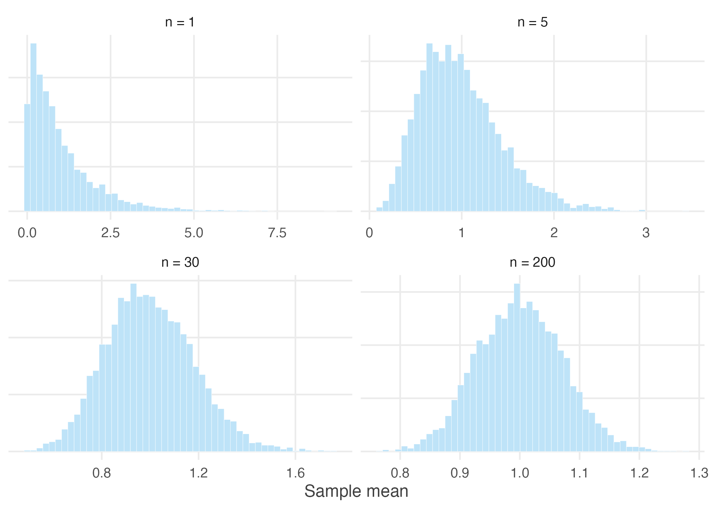
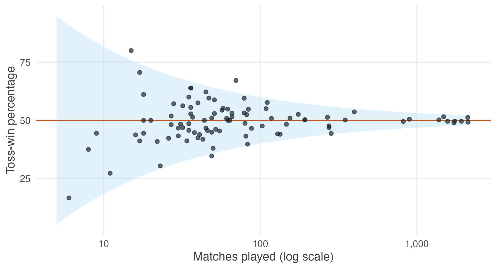

1.10 Practice problems
These are for learning. Work each one before opening the solution; the answer is worth very little if you have not first tried to produce it yourself.
The question bank that follows is for testing yourself and has no answers at all.
Concept checks
Short questions. A sentence or two is enough.
1.1 Why does repeating the same survey produce a different average each time?
Because a different set of people is surveyed each time. Every average is computed from whoever happened to be selected, and selection involves chance. The population has not changed and no arithmetic error has occurred — only the membership of the sample.
1.2 A die with a three painted on all six faces is rolled ten thousand times. What is the distribution of the outcome? Why is this example in the chapter at all?
There is no distribution to speak of: every outcome is three, and the standard deviation is zero. The example is there to show that statistics requires variation. Where outcomes never differ, there is nothing to describe, nothing to be uncertain about, and no inference to perform.
1.3 Distinguish between \(\bar{X}\) and \(\bar{x}\).
\(\bar{X}\) is the sample mean regarded as a random variable, before the sample is drawn: it has a distribution, a centre and a spread. \(\bar{x}\) is the single number obtained once a particular sample has been collected — one realisation of \(\bar{X}\).
1.4 A survey of 400 households gives a mean monthly income of ₹18,000. Is ₹18,000 a parameter or a statistic? What is the parameter here?
₹18,000 is a statistic: it was computed from a sample and would change with a different sample. The parameter is the mean monthly income of the whole population, \(\mu\), which is fixed but unknown.
Explain
One paragraph each. These reward clarity rather than calculation.
1.5 Explain to a friend who has never studied statistics why the Law of Large Numbers does not mean that a large sample is guaranteed to give the right answer.
The law says that as the sample grows, the sample mean becomes increasingly likely to lie close to the population mean — not that it will equal it. Any particular large sample may still be unlucky. What changes with sample size is the probability of being far off, which shrinks; the possibility never disappears. A large sample makes a badly wrong answer improbable, not impossible.
1.6 A friend argues that because a coin has landed heads six times running, tails is now more likely. Using the Law of Large Numbers, explain why this is wrong.
The coin has no memory, and the law promises nothing of the kind. What converges is the proportion of heads, and it converges by dilution rather than by correction. The six extra heads are never cancelled out; they simply become a smaller and smaller share of a growing total. The absolute surplus of heads typically grows with the number of tosses even as the proportion approaches one half.
1.7 Two researchers study earnings in the same district. One surveys 100 households, the other 2,500. Both report a mean. Which should be trusted more, and what would you need to know before answering?
Other things equal, the larger survey has the smaller standard error — by a factor of five, since \(\sqrt{2500/100} = 5\). But this holds only if both samples were drawn from the population of interest and drawn at random. A carefully designed survey of 100 households is worth more than a badly drawn survey of 2,500. Sample size governs precision; sampling design governs whether precision is about the right quantity at all.
Numerical problems
Work these with a pen before turning to R.
1.8 A producer of cigarettes claims that the mean nicotine content of its cigarettes is 3.6 milligrams with a standard deviation of 0.4 milligrams. Assuming these figures are correct, find the expected value and the variance of the sample mean nicotine content for samples of (a) 50, (b) 100, (c) 200 and (d) 1000 randomly chosen cigarettes. What happens to the variance of the sample mean as the sample size increases, and why?
The expected value of the sample mean equals the population mean regardless of sample size, so \(E(\bar{X}) = 3.6\) mg in every case.
The variance is \(\operatorname{Var}(\bar{X}) = \sigma^2/n = 0.16/n\), and the standard error is \(\sigma/\sqrt{n} = 0.4/\sqrt{n}\):
n <- c(50, 100, 200, 1000)
se <- 0.4 / sqrt(n)
round(data.frame(n, expected = 3.6, se, variance = se^2), 5)#> n expected se variance
#> 1 50 3.6 0.05657 0.00320
#> 2 100 3.6 0.04000 0.00160
#> 3 200 3.6 0.02828 0.00080
#> 4 1000 3.6 0.01265 0.00016The variance falls in proportion to \(1/n\). Each additional cigarette adds information, so the average over many of them is pulled more tightly around the population value. Note that going from 50 to 1000 cigarettes — twenty times the sample — reduces the standard error only by a factor of \(\sqrt{20} \approx 4.5\).
1.9 The lifetime of a type of battery used in electric vehicles has mean 225 minutes and standard deviation 24 minutes. A set of 10 batteries is used one after another. Approximate the probability that the set lasts
- more than 2,200 minutes, (b) more than 2,350 minutes, (c) more than 2,500 minutes, and (d) between 2,200 and 2,350 minutes.
Ten batteries lasting more than 2,200 minutes in total is the same event as their mean lifetime exceeding 220 minutes. Working with the sample mean lets us use the Central Limit Theorem, since \(\bar{X}\) is approximately normal with mean 225 and standard error \(24/\sqrt{10} = 7.589\).
mu <- 225; sigma <- 24; n <- 10
se <- sigma / sqrt(n)
# convert each total into the equivalent statement about the mean
c(a = pnorm(2200 / n, mu, se, lower.tail = FALSE),
b = pnorm(2350 / n, mu, se, lower.tail = FALSE),
c = pnorm(2500 / n, mu, se, lower.tail = FALSE),
d = pnorm(2350 / n, mu, se) - pnorm(2200 / n, mu, se))#> a b c d
#> 0.7449904 0.0938162 0.0004938 0.6511743By hand, for (a): \(z = (220 - 225)/7.589 = -0.66\), so \(P(Z > -0.66) = 0.745\). The others follow the same way.
Note the assumption being made. The Central Limit Theorem is being applied at \(n = 10\), which is small. It is defensible here only because battery lifetimes are not badly skewed; for a heavily skewed variable, ten observations would not be enough.
R exercises
1.10 Simulate the Central Limit Theorem starting from an exponential
distribution, which is strongly right-skewed. Draw 5,000 sample means for
sample sizes of 1, 5, 30 and 200 from rexp(n, rate = 1), and plot the four
distributions. At which sample size does the result begin to look normal?
set.seed(1)
sizes <- c(1, 5, 30, 200)
sim <- do.call(rbind, lapply(sizes, function(n)
data.frame(n = factor(paste("n =", n), levels = paste("n =", sizes)),
m = replicate(5000, mean(rexp(n, rate = 1))))))
ggplot(sim, aes(m)) +
geom_histogram(bins = 50, fill = book_palette$fill, colour = "white",
linewidth = 0.1) +
facet_wrap(~ n, scales = "free") +
labs(x = "Sample mean", y = NULL) +
theme_book() +
theme(axis.text.y = element_blank())
Figure 1.9: Sampling distributions of the mean from an exponential population.
At \(n = 1\) the picture is the exponential distribution itself — a sharp peak at zero with a long right tail. By \(n = 5\) it has a recognisable mound but remains clearly skewed. By \(n = 30\) it is close to symmetric, and by \(n = 200\) it is difficult to distinguish from a normal distribution by eye.
The exponential distribution has skewness 2, which is milder than the earnings data used in this chapter. That is why \(n = 30\) works reasonably well here and less well there.
1.11 Using data/cricket-toss.csv, plot each team’s toss-win percentage
against its number of matches. What shape does the scatter take, and why?
toss <- read.csv("data/cricket-toss.csv")
band <- data.frame(n = 5:2200)
band$hi <- 50 + 2 * 50 / sqrt(band$n)
band$lo <- 50 - 2 * 50 / sqrt(band$n)
ggplot(toss, aes(matches, pct_toss_won)) +
geom_ribbon(data = band, aes(x = n, ymin = lo, ymax = hi),
inherit.aes = FALSE, fill = book_palette$fill, alpha = 0.45) +
geom_hline(yintercept = 50, colour = book_palette$reject, linewidth = 0.6) +
geom_point(alpha = 0.7, size = 1.6, colour = book_palette$ink) +
scale_x_log10(labels = scales::comma) +
labs(x = "Matches played (log scale)", y = "Toss-win percentage") +
theme_book()
Figure 1.10: Toss-win percentage against number of matches played, with the theoretical limits of two standard errors.
The scatter forms a funnel: wide on the left, where teams have played few matches, and narrowing towards 50% as the number of matches grows. The shaded band shows two standard errors either side of 50, computed as \(50/\sqrt{n}\) — the same formula that governs the sample mean. Almost every team falls inside it.
This is the Law of Large Numbers made visible. The teams with extreme records are not lucky; they are simply the teams with few observations.